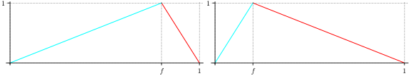
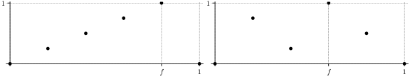
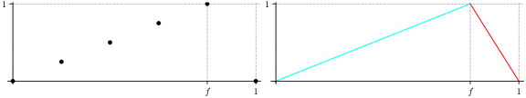
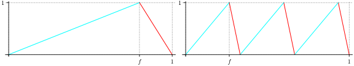
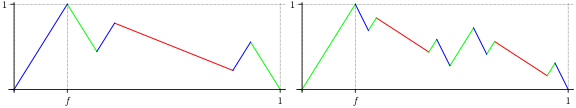
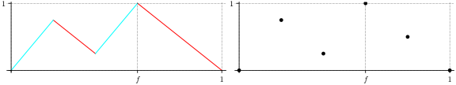
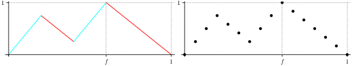

Electronic compendium of procedures for the 1-row Gomory–Johnson model¶
Index of “procedures” that can be applied to transform extreme functions
-
cutgeneratingfunctionology.igp.procedures.automorphism(function, factor=-1)¶ Apply an automorphism.
For the infinite group problem, apply the only nontrivial automorphism of the 1-dimensional infinite group problem to the given function, i.e., construct the function x -> function(-x). See Johnson (1974) for a discussion of the automorphisms.
In the finite group case, factor must be an integer coprime with the group order.
EXAMPLES:
sage: from cutgeneratingfunctionology.igp import * sage: logging.disable(logging.INFO) # Suppress output in automatic tests. sage: h = automorphism(gmic(f=4/5)) sage: extremality_test(h, False, f=1/5) True sage: h = automorphism(restrict_to_finite_group(gmic(f=4/5)), 2) sage: extremality_test(h, False) True
-
cutgeneratingfunctionology.igp.procedures.injective_2_slope_fill_in(fn, epsilon=1, show_plots=False)¶ Input: a (continuous) minimal function fn for the infinite group problem, or a discrete minimal function for the finite group problem, with rational breakpoints in 1/qZ and rational function values at the breakpoints. (weaker condition: rational breakpoints and the set {x: fn_interpolation(x)=1/2} is the union of some rational x and intervals.) Output: a two-slope extreme function fn2 such that fn2 = fn on 1/mqZ (and the infinity norm distance between fn and fn2 is less than epsilon).
The function is obtained by putting upward and downward tents with slopes equal to the limiting slopes of the input function on top of some intervals between the points of the finite group of order mq =
injective_2_slope_fill_in_order.This construction was introduced in [KoppeZ18a].
EXAMPLES:
sage: from cutgeneratingfunctionology.igp import * sage: logging.disable(logging.WARN) sage: fn = discrete_function_from_points_and_values([0,1/5,2/5,3/5,4/5,1],[0,1/2,1,1/2,1/2,0]) sage: minimality_test(fn) True sage: extremality_test(fn) False sage: fn2 = injective_2_slope_fill_in(fn) sage: extremality_test(fn2) True sage: fn = not_extreme_1() sage: fn2 = injective_2_slope_fill_in(fn) sage: extremality_test(fn2) True sage: find_infinity_norm_distance (fn, fn2) 1/12 sage: fn_app = injective_2_slope_fill_in(fn, epsilon=1/20) sage: finite_group_order_from_function_f_oversampling_order(fn_app) 160 sage: minimality_test(fn_app) True sage: find_infinity_norm_distance (fn, fn_app) 1/48 sage: fn = gmic() sage: fn2 = injective_2_slope_fill_in(fn) sage: fn == fn2 True sage: fn =restrict_to_finite_group(minimal_has_uncovered_interval(), order=8) sage: fn2 = injective_2_slope_fill_in(fn) sage: extremality_test(fn2) True sage: fn =restrict_to_finite_group(minimal_has_uncovered_interval(), order=16) sage: fn2 = injective_2_slope_fill_in(fn) sage: minimality_test(fn2) True sage: fn = minimal_has_uncovered_breakpoints() sage: fn2 = injective_2_slope_fill_in(fn) sage: minimality_test(fn2) True sage: fn = example7slopecoarse2() sage: fn2 = injective_2_slope_fill_in(fn) sage: number_of_slopes(fn2) 2 sage: minimality_test(fn2) True sage: fn = lift_until_extreme_only_works_with_strict_subset_L() sage: fn2 = injective_2_slope_fill_in(fn) sage: number_of_slopes(fn2) 2 sage: minimality_test(fn2) #long time True sage: fn = lift_until_extreme_default_style_bug_example() sage: fn2 = injective_2_slope_fill_in(fn) # q=52; q2=order=4004 sage: finite_group_order_from_function_f_oversampling_order(fn2) 12012
Systematic testing:
sage: q = 10; f = 1; show_plots=False sage: for h in generate_extreme_functions_for_finite_group(q, f): #long time ....: if number_of_slopes(h) > 2: ....: if show_plots: plot_2d_diagram(h, colorful=True) ....: order = injective_2_slope_fill_in_order(h) ....: if order < 1000: ....: i = injective_2_slope_fill_in(h, show_plots=show_plots) ....: assert minimality_test(i)
-
cutgeneratingfunctionology.igp.procedures.interpolate_to_infinite_group(function, merge=True)¶ Interpolate the given function to make it a function in the infinite group problem.
function may be a function of a finite (cyclic) group problem, represented as a
FastPiecewisewith singleton intervals within [0,1] as its parts.(function is actually allowed, however, to be more general; it can be any
FastPiecewise.)See
restrict_to_finite_groupfor a discussion of the relation of the finite and infinite group problem.If merge is
True(the default), adjacent pieces of equal slopes are merged into one.EXAMPLES:
The same as
restrict_to_finite_group(drlm_not_extreme_1()):sage: from cutgeneratingfunctionology.igp import * sage: logging.disable(logging.WARN) sage: h7 = discrete_function_from_points_and_values([0/7, 1/7, 2/7, 3/7, 4/7, 5/7, 6/7, 7/7], [0/10, 4/10, 8/10, 5/10, 2/10, 6/10, 10/10, 0/10]) sage: finite_dimensional_extremality_test(h7) True sage: h = interpolate_to_infinite_group(h7) sage: extremality_test(h) False sage: h21 = restrict_to_finite_group(h, oversampling=3) sage: finite_dimensional_extremality_test(h21) False sage: h28 = restrict_to_finite_group(h, oversampling=4) sage: finite_dimensional_extremality_test(h28) False sage: h14 = restrict_to_finite_group(h, oversampling=2) # for this example, even factor 2 works! sage: finite_dimensional_extremality_test(h14) False
-
cutgeneratingfunctionology.igp.procedures.multiplicative_homomorphism(function, multiplier)¶ - 
Construct the function x -> function(multiplier * x).
multiplier must be a nonzero integer.
EXAMPLES:
sage: from cutgeneratingfunctionology.igp import * sage: logging.disable(logging.INFO) # Suppress output in automatic tests. sage: h = multiplicative_homomorphism(gmic(f=4/5), 3) sage: extremality_test(h, False, f=4/15) # Provide f to suppress warning True sage: h = multiplicative_homomorphism(gmic(f=4/5), -2) sage: extremality_test(h, False, f=3/5) True
-
cutgeneratingfunctionology.igp.procedures.projected_sequential_merge(g, n=1)¶ Construct the one-dimensional projected sequential merge inequality.
\(h = g \lozenge_n^1 gmic\) with \(f = n r\) in the first function \(g\) and \(f = r\) in the second function
gmic.- The notation \(\lozenge_n^1\) is given in [39] p.305, def.12 & eq.25 :
- \(h(x) = \frac{1}{n+1}\xi(x) + n g(\lfloor(n + 1) x - r \xi(x)\rfloor)\), where \(\xi =\)
gmic(r).
Parameters:
- \(g\) (real) a valid inequality;
- \(n\) (integer).
- Function is known to be extreme under the conditions: cf. [39] p.309, Lemma 1
- \(g\) is a facet-defining inequality, with \(f=nr\) ;
- \(E(g)\) is unique up to scaling, cf. [39] p.289, def.6 & def.7 ;
- \([g]_{nr}\) is nondecreasing, cf. [39] p.290, def.8 (where \(m=1\)).
Note:
g = gj_forward_3_slope()does not satisfy condition (3), butg = multiplicative_homomorphism(gj_forward_3_slope(), -1)satisfies (3).
Examples: [39] p.311, fig.5
sage: from cutgeneratingfunctionology.igp import * sage: logging.disable(logging.INFO) sage: g = multiplicative_homomorphism(gj_forward_3_slope(f=2/3, lambda_1=1/4, lambda_2=1/4), -1) sage: extremality_test(g, False) True sage: h = projected_sequential_merge(g, n=1) sage: extremality_test(h, False) True
- Reference:
- [39] SS Dey, JPP Richard, Relations between facets of low-and high-dimensional group problems,
- Mathematical Programming 123 (2), 285-313.
-
cutgeneratingfunctionology.igp.procedures.restrict_to_finite_group(function, f=None, oversampling=None, order=None)¶ Restrict the given function to the cyclic group of given order.
If order is not given, it defaults to the group generated by the breakpoints of function and \(f\) if these data are rational. However, if oversampling is given, it must be a positive integer; then the group generated by the breakpoints of function and \(f\) will be refined by that factor.
If \(f\) is not provided, uses the one found by
find_f.Assume in the following that \(f\) and all breakpoints of function lie in the cyclic group and that function is continuous.
Then the restriction is valid if and only if function is valid. The restriction is minimal if and only if function is minimal. The restriction is extreme if function is extreme. FIXME: Add reference.
If, in addition oversampling >= 3, then the following holds: The restriction is extreme if and only if function is extreme. This is Theorem 1.5 in [IR2].
This oversampling factor of 3 is best possible, as demonstrated by function
kzh_2q_example_1()from [KZh2015a].EXAMPLES:
sage: from cutgeneratingfunctionology.igp import * sage: logging.disable(logging.WARN) sage: g = gj_2_slope() sage: extremality_test(g) True sage: gf = restrict_to_finite_group(g) sage: minimality_test(gf) True sage: finite_dimensional_extremality_test(gf) True sage: h = drlm_not_extreme_1() sage: extremality_test(h) False sage: h7 = restrict_to_finite_group(h) sage: h7.end_points() [0, 1/7, 2/7, 3/7, 4/7, 5/7, 6/7, 1] sage: minimality_test(h7) True sage: finite_dimensional_extremality_test(h7) True sage: h21 = restrict_to_finite_group(h, oversampling=3) sage: minimality_test(h21) True sage: finite_dimensional_extremality_test(h21) False sage: h28 = restrict_to_finite_group(h, order=28) sage: minimality_test(h28) True sage: finite_dimensional_extremality_test(h28) False sage: h5 = restrict_to_finite_group(h, order=5) sage: minimality_test(h5) False
- Reference:
- [IR2] A. Basu, R. Hildebrand, and M. Koeppe, Equivariant perturbation in Gomory and Johnson’s infinite group problem.
- The one-dimensional case, Mathematics of Operations Research (2014), doi:10. 1287/moor.2014.0660
[KZh2015a] M. Koeppe and Y. Zhou, New computer-based search strategies for extreme functions of the Gomory–Johnson infinite group problem, 2015, e-print http://arxiv.org/abs/1506.00017 [math.OC].
-
cutgeneratingfunctionology.igp.procedures.symmetric_2_slope_fill_in(function, epsilon, show_plots=False, f=None)¶ Given a continuous strong minimal function for the Gomory and Johnson infinite group problem with \(f \in Q\setminus Z\), return an extreme 2-slope function pi_ext that approximates function with infinity norm distance less than epsilon.
See Theorem 2 [dense-2-slope].
See also:
symmetric_2_slope_fill_in_irrational.EXAMPLES:
sage: from cutgeneratingfunctionology.igp import * sage: logging.disable(logging.WARN) sage: function = piecewise_function_from_breakpoints_and_values([0,1/5,2/5,3/5,4/5,1],[0,1/2,1,1/2,1/2, 0]) sage: extremality_test(function) False sage: epsilon = 1/10 sage: pi_sym = symmetric_2_slope_fill_in(function, epsilon) sage: find_infinity_norm_distance(function, pi_sym) <= epsilon True sage: number_of_slopes(pi_sym) 2 sage: extremality_test(pi_sym) True
Show plots:
sage: from cutgeneratingfunctionology.igp import * sage: pi_sym = symmetric_2_slope_fill_in(function, 1/8, True) #not tested sage: pi_sym = symmetric_2_slope_fill_in(function, 1/10, True) #not tested
- Reference:
- [dense-2-slope] A. Basu, R. Hildebrand, and M. Molinaro, Minimal cut-generating functions are nearly extreme, 2015, http://www.ams.jhu.edu/~abasu9/papers/dense-2-slope.pdf, to appear in Proceedings of IPCO 2016.
-
cutgeneratingfunctionology.igp.procedures.symmetric_2_slope_fill_in_irrational(function, epsilon, show_plots=False, f=None)¶ Given a continuous piecewise linear strong minimal function for the Gomory and Johnson infinite group problem, return an extreme 2-slope function pi_ext that approximates function with infinity norm distance less than epsilon.
This construction is a variant of Theorem 2 [dense-2-slope] (implemented in
symmetric_2_slope_fill_in), proposed by Yuan Zhou (2015, unpublished):It turns out that if \(\pi\) is piecewise linear, then in Theorem 2, \(b\) does not have to be a rational number. This is because when \(q\) is large enough (precisely, when \(1/q \leq \delta/2\) and \(\max\{s^+, |s^-|\}/q \leq \epsilon/2\), where \(s^+\) and \(s^-\) are the most positive and the most negative slopes of pi_comb), doing a 2-slope fill-in on the pi_comb restricted to the grid (1/q)Z will give a pi_fill_in that always has pi_fill_in(\(b\))=1, even though \(b\) is irrational and thus is not in (1/q)Z. For the same reason, \(\delta\) and other breakpoints of pi_comb in lemma 6 do not have to be rational numbers either. To ensure pi_sym is well defined, consider \(U=(1/q)Z \cup \{b/2, (b+1)/2\}\) when constructing pi_fill_in. The proof follows verbatim.
EXAMPLES:
sage: from cutgeneratingfunctionology.igp import * sage: logging.disable(logging.WARN) sage: function = piecewise_function_from_breakpoints_and_values([0,2/5+1/sqrt(2)/10,3/5+1/sqrt(2)/10,4/5,1],[0,1,1/2,1/2,0]) sage: minimality_test(function) True sage: epsilon = 1/10 sage: pi_sym = symmetric_2_slope_fill_in_irrational(function, epsilon) sage: find_infinity_norm_distance(function, pi_sym) <= epsilon True sage: number_of_slopes(pi_sym) 2 sage: extremality_test(pi_sym) True sage: h = drlm_backward_3_slope(f=1/sqrt(61), bkpt=3/sqrt(61)) sage: minimality_test(h) True sage: extremality_test(h) False sage: pi_sym = symmetric_2_slope_fill_in_irrational(h, 1/10) sage: find_infinity_norm_distance(h, pi_sym) <= 1/10 True sage: number_of_slopes(pi_sym) 2 sage: extremality_test(pi_sym) True
Show plots:
sage: pi_sym = symmetric_2_slope_fill_in_irrational(function, 1/10, True) #not tested
- Reference:
- [dense-2-slope] A. Basu, R. Hildebrand, and M. Molinaro, Minimal cut-generating functions are nearly extreme, 2015, http://www.ams.jhu.edu/~abasu9/papers/dense-2-slope.pdf, to appear in Proceedings of IPCO 2016.
-
cutgeneratingfunctionology.igp.procedures.two_slope_fill_in(function, order=None)¶ Extend the given function to make it a 2-slope function in the infinite group problem.
function may be a function of a finite (cyclic) group problem, represented as a
FastPiecewisewith singleton intervals within [0,1] as its parts.(function is actually allowed, however, to be more general; it can be any
FastPiecewise. When the given function is a function for the infinite group problem, itsrestrict_to_finite_groupwith order=order would be considered.)[Johnson (1974), section 7; see also Gomory–Johnson (1972, I, II)] If function is a subadditive valid function for the finite group problem, then its 2-slope fill-in is a subadditive valid function for the infinite group problem.
EXAMPLES:
sage: from cutgeneratingfunctionology.igp import * sage: logging.disable(logging.WARN) sage: h_dis = discrete_function_from_points_and_values([0,1/5,2/5,3/5,4/5,1],[0,1/2,1,1/2,1/2,0]) sage: subadditivity_test(h_dis) True sage: h_fill = two_slope_fill_in(h_dis) sage: subadditivity_test(h_fill) True sage: number_of_slopes(h_fill) 2 sage: gmic() == two_slope_fill_in(gmic()) True